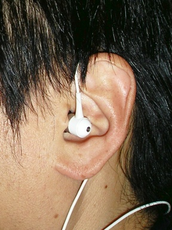

これまでカナル・タイプ ※1 のヘッドホンは避けてきました。かなり以前は、かさばらず携帯に便利なので使っていたのですが、どうしても耳からポロポロと外れてしまい、それがストレスだったんです。
それでとうとうカナル・タイプを使うのを止めてしまいました。それ以来、携帯プレーヤーでも小型とはいえ普通の耳に被せるタイプのヘッドホンに切替えました。
※1 インナー・イヤー・タイプとも呼ばれるのは、みなさんご存じのとおりです。イヤホンと呼ばれることも多いですね。
ところがですね、今日、たまたまプロのミュージシャンの人達も使っているイヤー・モニターを見ていたんです。すると安価な、とはいっても数万円はするのですが、イヤー・モニターでカナル・タイプのヘッドホンに似た形状のものがあるわけなんです。
その装着方法がユニークで「なるほど、これなら外れにくそう」という装着方法が写真で説明されていたのです。
さっそく真似てみました。
なんと 5 分もせずにポロリと外れていたヘッドホンの外れる気配がありません。
なんだか、うまくいってそうなので、しばらくこれで試したいと思います。
．．．．．
．．．．．
．．．．．
そっか。
これまで重力に負けて外れてたんだ。
．．．．．
．．．．．
．．．．．
というか、よくよく考えたら携帯プレーヤーは、もう持ってないんだった。
気がついたときには、もうそれは使えない．．．．．